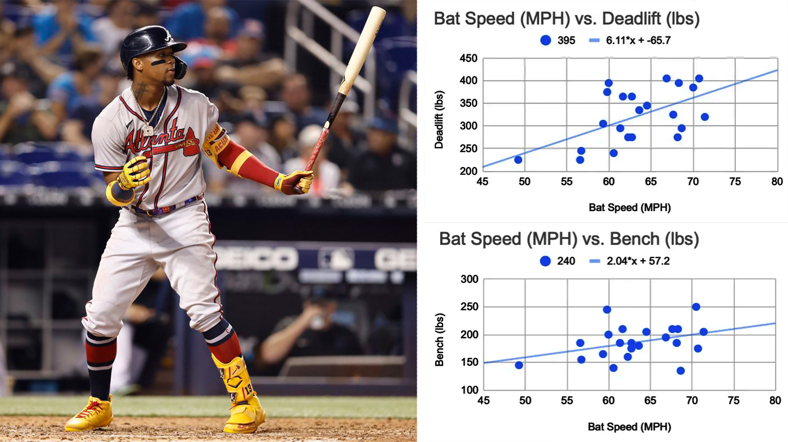
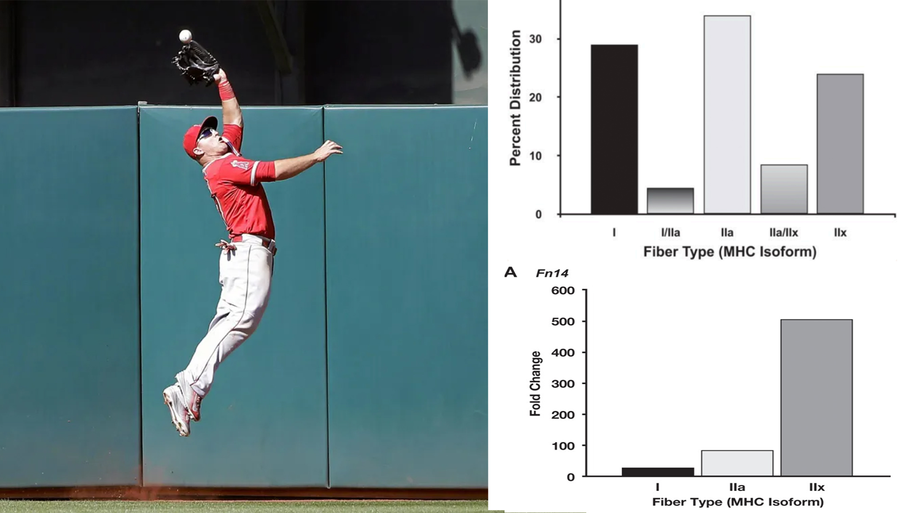

Home
Research
Videos
Programs
About
 The Science of Bat Speed, and How to Increase It
how to increase bat speed by 10%
is lifting weights the best way to train?
what the most powerful hitters have in common
 The Science of Becoming Fast Twitch
how important are genetics, compared to training?
how fast twitch are elite athletes?
is sprinting or lifting weights more effective?